ФОТОАППАРАТЫ
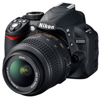
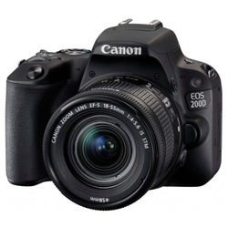
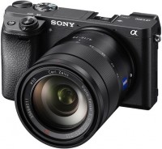
Фотоаппара́т (фотографи́ческий аппара́т, фотока́мера) — устройство для регистрации неподвижных изображений (получения фотографий). Запись изображения в фотоаппарате осуществляется фотохимическим способом при воздействии света на светочувствительный фотоматериал. Получаемое таким способом скрытое изображение преобразуется в видимое при лабораторной обработке. В цифровом фотоаппарате фотофиксация происходит путём фотоэлектрического преобразования оптического изображения в электрический сигнал, цифровые данные о котором сохраняются на энергонезависимом носителе.
Классификация
- Пленочные фотоаппараты
- Панорамные фотоаппараты
- Зеркальные камеры
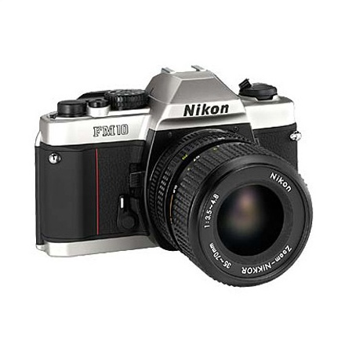
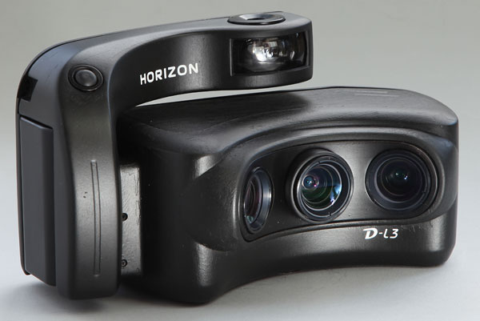
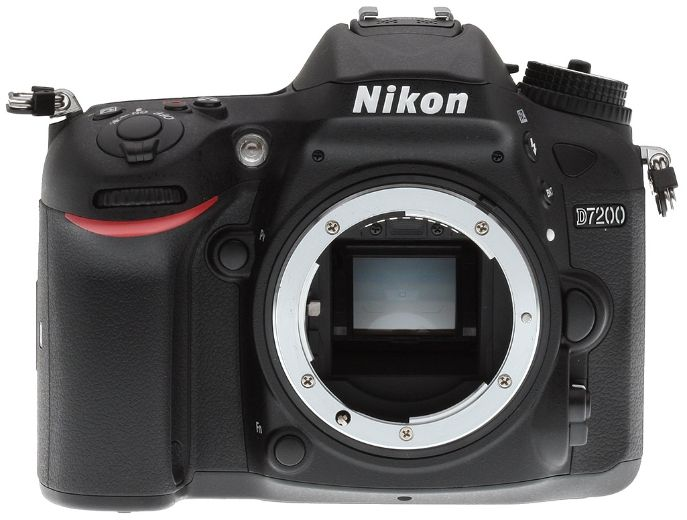
Пленочные фотоаппарты
Пленочными, или широкопленочными, называются аппараты, рассчитанные на применение так называемой катушечной, или роликовой пленки. Они допускают перезарядку на свету, причем не требуют применения кассеты. Последнюю заменяет особая упаковка катушечной пленки. Кроме того, фотопленка легче стеклянных пластинок и занимает меньше места. Конструктивное разнообразие пленочных аппаратов достаточно велико. Для наводки на резкость более простые пленочные аппараты снабжены шкалой расстояний, а более совершенные - оптическими дальномерами. Затворы почти всегда центральные, видоискатели - различных конструкций. Наиболее распространенные форматы - 6 Х 6 и 6 Х 9 см. За редким исключением не допускают применения сменных объективов.
Панорамные фотоаппараты
Предназначены для широкого охвата фотографируемого вида и получения панорамных фотоснимков. Главная особенность - расположение пленки не в одной плоскости, а по круговой линии (дуге), объектив же во время съемки поворачивается вокруг вертикальной оси.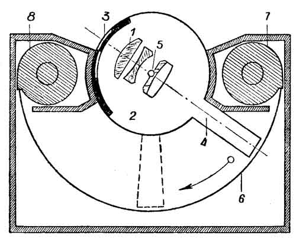 Наглядное представление о работе аппарата дает схема.Объектив (1) расположен в светонепроницаемой цилиндрической камере (2). Свет падает на него через щель затвора (3), а затем выходит через узкий раструб (4). Перед фотосъемкой объектив находится в исходном положении, в каком он показан на схеме. При нажатии на спусковую кнопку щель затвора открывается. Одновременно объектив под действием заводной пружины поворачивается по направлению стрелки вокруг вертикальной оси (5), экспонируя пленку (6) от одного ее конца до другого. Таким образом, в каждый отдельно взятый момент экспонируется только узкая полоска пленки. Для каждой последующей съемки пленка перематывается из подающей кассеты (7) в приемную кассету (8). Благодаря такой системе на всей поверхности пленки получается одинаково резкое и яркое изображение. Таким углом охвата не обладает ни один из повсеместно применяемых широкоугольных объективов.
Зеркальные камеры
Зеркальные камеры - особая конструктивная разновидность фототехники. Принципиальное их отличие - зеркало, помещенное внутри камеры.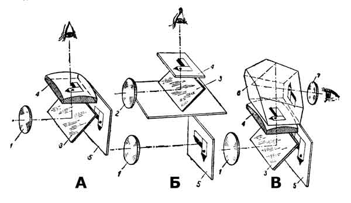Оптические схемы зеркальных аппаратов: А) однообъективный; Б) двухобъективный; В) с оборачивающей оптической системой. 1 - рабочий объектив; 2 - визирный объектив; 3 - зеркало; 4 - матовое стекло; 5 - пленка или матрица; 6 - пентапризма с крышей; 7 - окуляр. Лучи света, пройдя через объектив, отражаются зеркалом, которое в момент наводки на резкость стоит под углом 45 градусов к оптической оси объектива. Отразившись от зеркала, лучи света направляются вверх, где строят оптическое изображение фотографируемых предметов на горизонтально расположенном матовом стекле. Посредством специального механизма зеркало в мгновение съемки откидывается вверх, закрывает собой матовое стекло и освобождает доступ света к задней стенке камеры, где расположена пленка, пластинка или матрица. В этот момент срабатывает затвор и происходит фотосъемка. Преимущество зеркальных фотоаппаратов состоит в следующем: При наблюдении за изображением на матовом стекле сверху фотограф видит его, что ощутимо облегчает решение композиционных задач и в известной мере облегчает наводку на резкость.
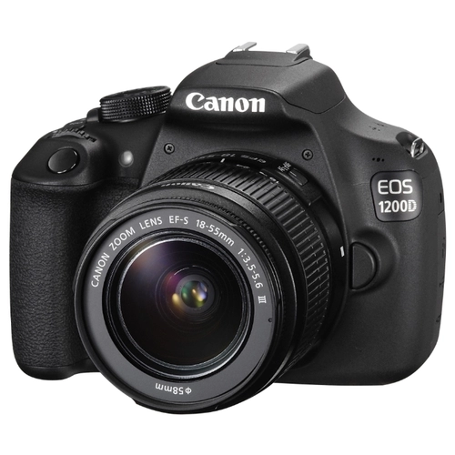
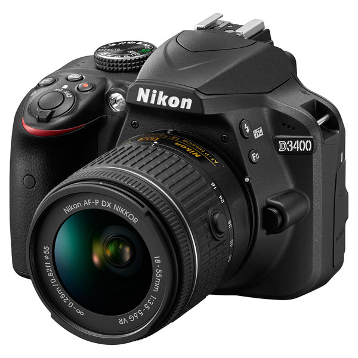
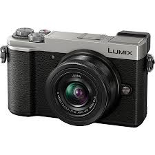
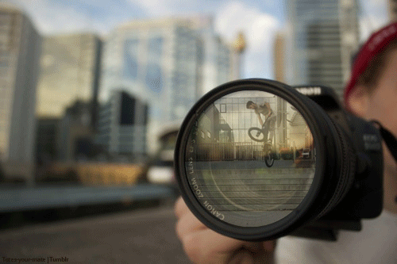
2019